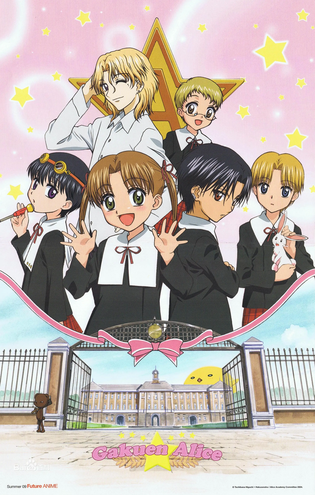
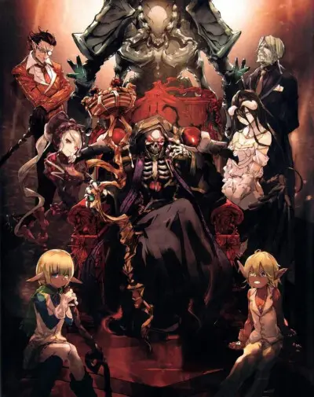

| 序号 | 推荐动漫 | 动漫名称 | 评分（满分10分） | 推荐理由 |
|---|---|---|---|---|
| 1 | JOJO的奇妙冒险系列动画 | 9.4分 | 剧情和人物刻画都非常好，主要讲述了历代jojo面临的命运的挑战以及黄金精神的传承。可能画风一开始看不习惯，但是习惯之后真的非常帅非常有魅力也很有辨识度！ | |
| 2 | 夏目友人帐 | 9.5分 | 整个剧情非常治愈，真的非常治愈，讲述了一位人类少年与各种各样的妖怪之间发生的故事，非常暖心。 | |
| 3 | 堀与宫村 | 9.0分 | 非常甜的校园恋爱番！剧情自然又不拖沓，男女主角的性格也都非常直爽没有什么迂回误解，甜度爆表的一部番！ | |
| 4 | 凹凸世界系列动画 | 8.5分 | 设定是宇宙中来自不同星球的能力者参加凹凸大赛，最终获胜者可以向神明许一个愿望。3D画风让人耳目一新，剧情也安排的相对不错，官方偶尔整活让剧情的趣味性变得更强，剧情稍微有一点点碎片化，目前新出的一季还没有追，但是是一部值得期待的国漫。 | |
| 5 | 野良神 | 9.4分 | 一部集热血战斗、恋爱、教育意义为一体的番！讲述了一位落寞的神明与人的故事。虽然是比较早的番，但是人物塑造和剧情方面都非常好，OP和ED也非常值得一听！很喜欢的一部番！ | |
| 6 | 黑子的篮球 | 9.0分 | 作为我为数不多看过的运动番，这部番里的友情和竞技对抗描写的都相当不错，角色性格也塑造的很好，主角也在不断地成长，从中可以感受到属于青春的那股蓬勃的力量。 | |
| 7 | 关于我转生变成史莱姆这档事 | 9.2分 | 这是一部由轻小说改编而成的番剧，故事基本上围绕主角不断升级打怪展开，角色形象个人认为塑造的不错，喜欢爽快的剧情可以看看这部番！ | |
| 8 | 家庭教师 | 9.6分 | 这部番围绕意大利黑手党为背景展开，讲述主角纲吉在里包恩的协助下不断成长为一名合格黑手党领袖的故事。故事情节安排自然合理，剧情发展也跌宕起伏很能抓住人心，BGM也相当经典，唯一美中不足的可能就是主角前期过于依赖里包恩，但是依旧是一部经典老番！ | |
| 9 |  | 爱丽丝学园 | 9.2分 | 虽然故事主角是一群小学生，主角的性格设定也是天真不谙世事但莽撞冲动这种老套路。但是超能力设定的加入以及主角智商在线这两点给这部番加了很大的印象分。此外，虽然主要角色是一群小学生，但是这部番对于小孩逐步成熟的心智把握的很好，这也是吸引我追了这部番的漫画的原因之一。 |
| 10 |  | overlord | 9.0分 | 同样是一部讲述了主角穿越到异世界的番，但是与史莱姆一开始一无所有然后爽快升级的剧情不同，主角一开始就是以满级身份穿越降临，利用自己的才智和部下的能力征服世界。角色塑造也是相当帅气，动漫的OP和ED也非常令人上头，可以说是一部视听盛宴。 |